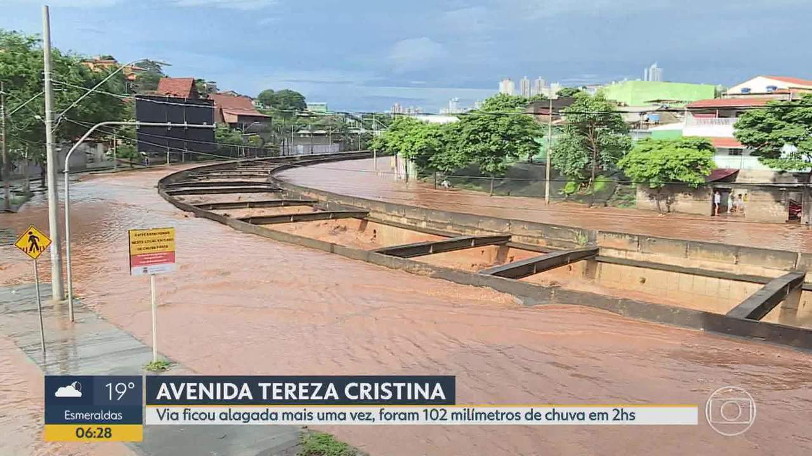

O APOEMA tem como objetivo ajudar motoristas em situações de risco , caudas por temporais e chuvas ,não se precupe estaremos ao seu lado , com as melhores informaões e sugestões para poupar os danos materias e salvando vidas!.
AV. Tereza Cristina risco imediato
Ações sugeridas
Na região oeste de Bh se encontra a AV. Tereza Cristina que é o local de maior alagamento e maiores perdas , com as imagens podemos tirar a provar disso
Outros locais afetados
Desvios Sugeridos